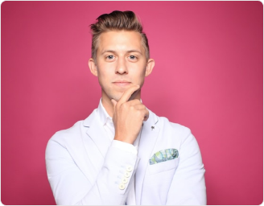

Инновационное оборудование
В нашей клинике мы пользуемся передовым стоматологическим оборудованием из Германии, соответствующим самым высоким стандартам качества, и имеющим все необходимые сертификаты и лицензии для обеспечения безопасности и эффективности лечения.
Высокопрофессиональные стоматологи
Команда нашей клиники состоит из опытных специалистов с высшим профессиональным образованием и высоким уровнем квалификации. Мы ценим профессионализм и постоянно развиваем навыки нашей команды для предоставления пациентам лучших результатов.
Бесплатная первая консультация
Мы рады предложить вам первую консультацию и диагностику полости рта абсолютно бесплатно. Вместе с нашими врачами вы сможете обсудить рекомендации, план лечения и подобрать наиболее подходящие вам методы и технологии.
Гибкая система оплаты и доступность
Мы разрабатываем индивидуальные предложения для каждого пациента и предлагаем возможность оплаты стоматологических услуг в кредит. Также у нас действуют скидки для льготных категорий граждан, делая лечение доступным для всех желающих заботиться о своём здоровье.
Услуги
Экстренная
стоматологическая помощь
-
1
Моментальное облегчение
острой зубной боли -
2
Устранение зубного абсцесса с гарантией
-
3
Восстановление сломанных или выбитых зубов
-
4
Врачи-специалисты для лечения инфекций полости рта и зубов
-
5
Высокопрофессиональное удаление зуба мудрости
Стоматология для детей
-
1
Тщательная диагностика и консультации для ваших малюток
-
2
Эффективное детское ортодонтическое лечение
-
3
Только лучшее лечение заболеваний дёсен для детей
Терапия и профилактика в стоматологии
-
1
Консультации с мастером своего дела по профилактике и диагностике
-
2
Лучшая диагностика для предупреждения заболеваний дёсен в полости рта
-
3
Множество других стоматологических услуг от специалистов высокого класса
Эстетическая стоматология
-
1
Зубы будут сиять после нашей эксклюзивной процедуры отбеливания
-
2
Создание идеальной улыбки с помощью виниров и зубные имплантации
-
3
Лёгкость и надёжность керамических коронок и мостов для восстановления улыбки
Специалисты

Девятьярова Вера Степановна
Врач стоматолог-терапевт
Выпускница Ижевского государственного медицинского института, квалификация «врач-стоматолог» по специальности «Cтоматология». Сертифицированный эксперт терапевтической стоматологии с 2013 года. Отличается высокой работоспособностью и вниманием к пациентам
Попов Александр Фёдорович
Врач стоматолог-ортопед
Выпускник Уральской государственной медицинской академии, квалификация «врач-стоматолог» по специальности «Cтоматология». Сертифицированный специалист ортопедической стоматологии с 2015 года. Обеспечивает высокое качество работы, а его личное обаяние создаёт комфортную атмосферу на приёме
Абрамова Любовь Валентиновна
Врач стоматолог-терапевт
Выпускница Свердловского областного медицинского училища по специальности «Стоматология» с 1970 года. Высококлассный специалист в стоматологии с многолетним опытом как залог успешного лечения. Владеет современными методами терапевтической стоматологии
История и расположение
Стоматологическая клиника «Здоровье-1», основанная в 1996 году, привлекает жителей региона благодаря высокому качеству услуг, доступным ценам и уютной атмосфере. Мы стремимся предоставить профессиональное стоматологическое обслуживание по справедливой цене, в соответствии с международными и передовыми российскими стандартами.
«Здоровье-1» это:
- — Центральное расположение;
- — Более 25 лет успешной практики;
- — Тысячи довольных пациентов;
- — Ведущие специалисты города;
- — Современные технологии и высокие стандарты качества;
- — Привлекательные акции и предложения;
- — Уют, комфорт и дружелюбный коллектив.
Мы предлагаем широкий спектр услуг, включая лечение и реставрацию зубов, профилактику кариеса, протезирование, рентгендиагностику, лечение пародонтита с использованием аппарата Вектор, шинирование зубов и др.
Приём проходит по предварительной записи. Предоставляем возможность лечения в кредит и работаем с полисом ОМС.
Стоматология «Здоровье-1» приглашает вас стать нашим пациентом и рада, что так многие выбирают нашу клинику и рекомендуют её своим близким, друзьям и знакомым!